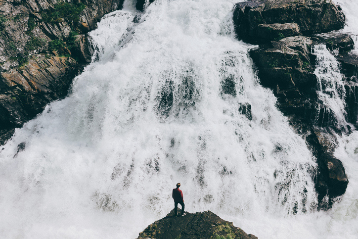

Steintur
Denne turen skal du gå opp et fjell og se på utsikten fra en stein

Daltur
På denne turen skal du besøke en dal
Fosstur
Denne turen så går du til en foss

Nordlystur
På denne turen så skal du gå å se Nordlyset

Innsjøtur
På denne turen skal du se en innsjø mellom fjell

Topptur
Denne turen så skal du på topptur med ski

Skogstur
På denne turen så skal du i skogen

Tur gjennom fjell
På denne turen skal du gå på tur mellom fjell